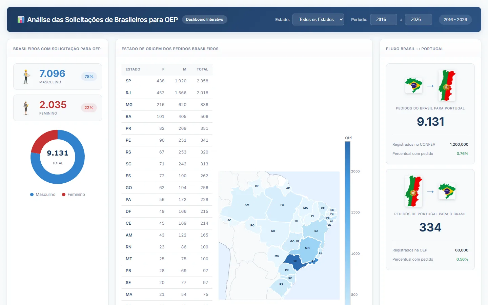
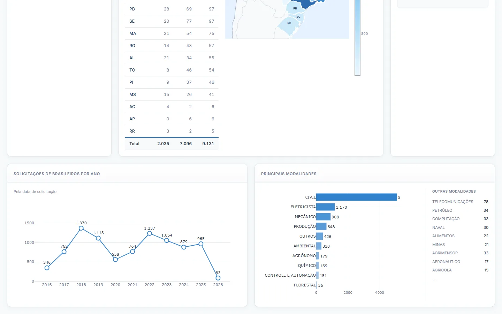
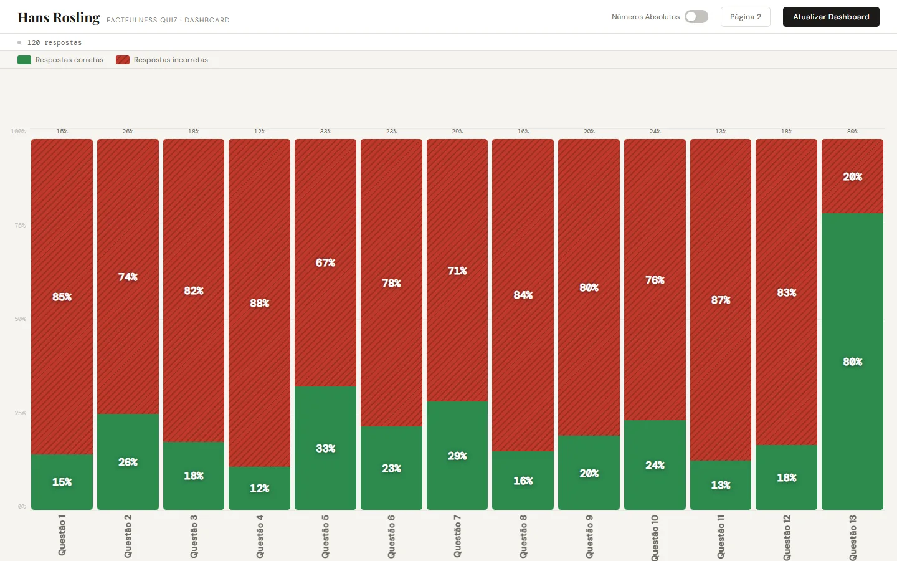
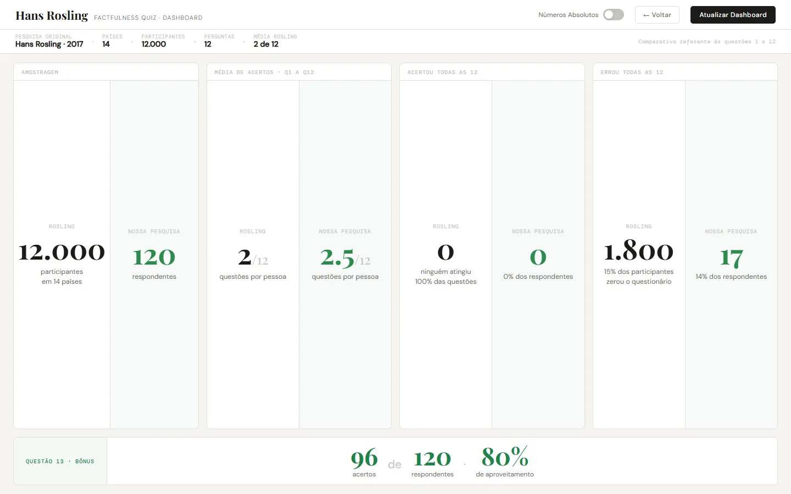

Análises avulsas para o CONFEA
Quatro análises curtas feitas para o CONFEA, cada uma com o próprio script: um painel de pedidos de engenheiros brasileiros à Ordem dos Engenheiros de Portugal, um painel ao vivo para uma palestra, a conversão da Lei Orçamentária de 2026 e uma coleta de salários no Portal da Transparência.
- Instituição
- CONFEA
- Formato
- Scripts independentes
- Saída
- HTML, CSV e Excel
- Período
- jan a mar/2026
9.131pedidos de brasileiros à Ordem dos Engenheiros de Portugal, 2016 a 2026
13perguntas no quiz da palestra
4análises independentes
Telas
Capturas dos painéis gerados.








Análises
- Ordem dos Engenheiros de PortugalPainel em arquivo único, para envio por e-mail. Filtra por UF e por intervalo de anos; mapa, tabela por sexo, série anual e modalidades.
- Palestra sobre o método de Hans RoslingA plateia responde a 13 perguntas num formulário. Um script do Google Planilhas devolve os totais e o painel mostra o percentual de acerto de cada pergunta.
- Lei Orçamentária de 2026Converte o arquivo RDF N-Triples do Portal de Dados Abertos em CSV e Excel, com leitor próprio, sem biblioteca de terceiros.
- Salários de engenheiros públicosConsulta a API do Portal da Transparência pelas ocupações da família CBO 214 e grava a planilha formatada.
Fluxo do painel da palestra
Plateia
Formulário13 perguntas de múltipla escolha
Planilha
Respostasuma linha por pessoa
Apps Scriptcompara com o gabarito e soma
Painel
Página 1acerto por pergunta, em % ou absoluto
Página 2comparação com a pesquisa de 2017
Pedidos por ano
Pedidos de brasileiros à Ordem dos Engenheiros de Portugal
Pela data de solicitação. 2026 tem 83 pedidos até a data da extração.
Pedidos por modalidade
5.094
engenharia civil, 56% dos pedidos
1.170
engenharia elétrica
908
engenharia mecânica
78%
dos pedidos feitos por homens (7.096 de 9.131)
Tecnologias
PythonpandasopenpyxlGoogle Apps ScriptAPI do Portal da TransparênciaHTML e JavaScript